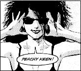
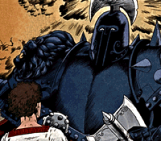
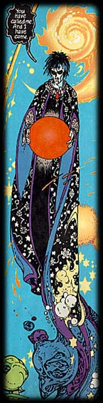

TIMELINE
© DC Comics 1996. All rights reserved. Originally published as a poster in SANDMAN #75.
September 1987
Neil Gaiman suggests a radical new take on the old DC Sandman character to British liaison editor Karen Berger and company president Jenette Kahn.
October 1987
Karen Berger asks Neil to come up with a completely new Sandman character. Britain is hit by its first hurricane in three hundred years. After two weeks without power, electricity returns, and Neil writes the outline for the first eight issues of SANDMAN.
November 1987
SANDMAN approved as an ongoing series, with Dave McKean painting the covers. Dave McKean had previously painted the covers and interior art on BLACK ORCHID, Neil's first project with Karen Berger.
January 1988
Penciller Sam Kieth is invited on board; he suggests inker Mike Dringenberg.
November 1988
Before anything is published, Sam Kieth leaves the project, saying he feels like Jimi Hendrix in the Beatles. Mike Dringenberg takes over as penciller and Malcolm Jones III is brought in as inker.
December 1988
SANDMAN #1 is published. Neil Gaiman and Mike Dringenberg attend first SANDMAN signing at Jim Hanley's Universe in Staten Island. About a dozen people show up.
July-August 1989
As a special promotion, SANDMAN #8 was overprinted and send out to stores. In this issue, "The Sound of Her Wings", Death is introduced as the Sandman's older sister. Her look was designed by Mike Dringenberg.

September 1989-April 1990
The first major storyline, "The Doll's House", reintroduces a minor character from the first storyline. The character, Unity Kinkaid, fell victim to the sleeping sickness brought on by the Sandman's imprisonment. During her decades long sleep, Unity was mysteriously impregnated by one of the Endless.
The seeds are planted for the antipathy between Dream and his sister/brother Desire.
May 1990
A favorable Rolling Stone magazine article about SANDMAN prompts DC to expedite publishing of THE DOLL'S HOUSE collected trade paperback, with introduction by Clive Barker.
July-September 1990
The Dream Country arc, the first SANDMAN short stories, comes out. This arc includes "A Dream of a Thousand Cats" and "A Midsummer Night's Dream".
October 1990
The rest of the Sandman's siblings - save one - are introduced in issue #21. Mike Dringenberg's last issue as regular penciller and the beginning of the second major storyline, "Season of Mists". Subsequent storylines and single-issue stories would feature a variety of different artistic teams that would contribute to the title's eclectic feel. The Norse god Loki is punished and a forlorn fairy is left in the Dreaming, two events that will have unexpected repercussions at the end of the series.
June 1991
The Sandman's son appears for the first time in "Thermidor" , the issue that introduces Johanna Constantine, an ancestor of Hellblazer's John Constantine. Stan Woch provided pencil art.
September 1991
SANDMAN month, a special month set aside to promote the title, sees the release of two new SANDMAN trade paperbacks: DREAM COUNTRY, with an introduction by Steve Erickson, and PRELUDES AND NOCTURNES, with an introduction by F. Paul Wilson. Also released: a Dave McKean-designed slipcase with original painted artwork, and the first SANDMAN statue, designed by sculptor Randy Bowen from a sketch by Kelley Jones. Kelley also provided the artwork for a SANDMAN poster which featured the Sandman, Death and some denizens of the Dreaming. The statue came in a box which carried a short story by Neil Gaiman on its side.

The Sandman T-shirt is issued, featuring Dream and Death as drawn by Mike Dringenberg and the words "How would you feel about life if Death was your older sister?". Also issued this month: The Death watch, featuring an image of Death and a skull "mask" which covers her face every minute.
The SANDMAN Special, a Greek revisionist tragedy illustrated by Bryan Talbot, reveals Destruction, the missing seventh sibling of the Endless, and reintroduces Sandman's son Orpheus. The cover of this special issue glowed (dimly) in the dark.
October 1991
"A Midsummer Night's Dream", the darkly lyrical issue illustrated by Charles Vess, wins the World Fantasy Award for best short story, making it the first comic to win an award in the category of prose fiction.
Artist Shawn McManus illustrated the storyline "A Game of You", which features the character Barbie from "The Doll's House" and introduces a new love interest for the Dream King.
June-August 1992
The first Jill Thompson issue, which marks Daniel's first visit to the Dreaming, and two other short stories constitute the "Convergence" story arc.
July 1992
SEASON OF MISTS Hardcover, with an introduction by Harlan Ellison, is published. It was designed to look like an old family Bible, and the typeface used for the introduction was found by Neil in a book from the 1730's. Neil does a signing tour for the book. At one occasion, over a thousand people show up.
August 1992
The Endless poster, illustrated by Mike Dringenberg, depicts the archetypal siblings and a passel of cute kittens. It is later seen on a weekly basis on the television show Roseanne.
September 1992
Jill Thompson and Vince Locke team up to illustrate the "Brief Lives" storyline, in which the Sandman meets his son for the first time in many lifetimes and releases his from his misery. This letting of family blood invokes the attention of the Furies, setting the stage for the final act of the series.
December 1992
"Death Talks About Life", an 8-page story in which Death discusses safe sex with help from John Constantine. Written by Neil with line art by Dave McKean, it was first published in SANDMAN #46. It has since gone back to press for subsequent printings and exists as a free pamphlet-winning praise from educators and health providers.
January 1993
The imprint VERTIGO is launched, spearheaded by group editor Karen Berger. SANDMAN #47 in the "Brief Lives" arc was the first VERTIGO issue. "Fear of Falling" and "The Castle" were two original short-shorts written for VERTIGO collections.
Chris Bachalo and Mark Buckingham illustrate the first DEATH miniseries, THE HIGH COST OF LIVING. This issue was the all-time best-selling comic for mature readers.
March 1993
Randy Bowen's Death sculpture, based on a Chris Bachalo drawing, ships, along with a Death T-shirt, Death poster, and second Death watch, also using Chris Bachalo's winsome Death.

April 1993
The Arabian Nights-inspired, P. Craig Russel-illustrated SANDMAN #50 explains yet another of the mysterious objects in the Sandman's chest (first seen at the end of "Season of Mists"). This was the only SANDMAN written out of sequence, and it took about a year to complete.
This issue, which also had a platinum edition, was used for the design of the second Sandman statue.
May-October 1993
Bryan Talbot, Mark Buckingham, Gary Amaro, Shea Anton Pensa, Vince Locke, John Watkins, Alec Stevens, Michael Zulli, Dick Giordano, Michael Alfred, Tony Harris and Steve Leialoha all illustrate the gang of the unlikely travelers who gather during a reality storm to tell each other tales at the inn called World's End.
May 1993
The collected edition of A GAME OF YOU, featuring an introduction by Samuel R. Delany, is realeased.
June 1993
Emperors, werewolves, the young Marco Polo and other characters from the single-issue SANDMAN stories appear in the collected trade paperback FABLES AND REFLECTIONS, which also contains an expanded version of "Fear of Falling", and an introduction by Gene Wolfe.
December 1993-May 1995
The three witches, Lyta Hall, Rose Walker and a host of other characters from issues past come together in the apocalyptic storyline, "The Kindly Ones", in which Morpheus passes on. Marc Hempel illustrates with help from Richard Case, Teddy Kristiansen, Glynn Dillon, Charles Vess and Dean Ormston.
February 1994
A Sandman Trading Card Set is released to rave reviews, inspriring a VERTIGO card colection to follow. The set includes 90 elongated trading cards of the series' denizens, 7 copper-foiled Chase cards of the Endless and a limited edition hologram card of Sandman.
June 1994
The collected edition of BRIEF LIVES, with an introduction by Peter Straub, is released.
April 1995
The limited edition VERTIGO TAROT deck breaks new ground in the category of retail products. Exquisitely designed by Dave McKean, the 128-page hardcover guide is written by noted Tarot expert Rachel Pollack and comes complete with 78 full-color tarot cards.
The collected edition of the WORLD'S END, featuring an introduction by Stephen King, is released.
June-November 1995
Michael Zulli shows a new side of the new Sandman in "The Wake", the first finished pencil storyline ever published by DC/VERTIGO.
January 1996
Using lavendish brushwork and a minimal color palette, Jon J. Muth illustrates a Chinese poem featuring Morpheus and Daniel, heralding the most experimental SANDMAN issue to date.
February 1996
The collected edition of THE KINDLY ONES, featuring an introduction by Frank McConnell, is released.
March 1996
Charles Vess returns to illustrate "The Tempest", the companion story to "A Midsummer Night's Dream", marking the end of the story begun in issue #1 of SANDMAN.
To date, SANDMAN has won numerous awards in the U.S. and abroad.